Her Majesty the Queen in Right of Canada v. Canada North Group Inc., et al.
This transcript was made with automated artificial intelligence models and its accuracy has not been verified. Review the original webcast here.
Justice Rowe (00:00:02): The court, la cause.
Justice Côté (00:00:05): Thank you.
Justice Wagner (00:00:29): Good morning, be seated.
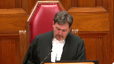
In the case of Her Majesty the Queen against Canada North Group Inc. et al.
For the appellant, Her Majesty the Queen, Michael Taylor and Louis Leroux.
For the respondent, Business Development Bank of Canada, Sir Geoffrey Oliver and and Mary Buttery QC.
For the respondent, Canada North Group Inc. et al.
Darren R. Beganek QC and Brad N. Gove.
For the intervener, Insolvency Institute of Canada, Kelly J. Bourassa.
For the intervener, Canadian Association of Insolvency and Restructuring Professionals, Randall Van de Mosseler.
Mr. Taylor.
Speaker 1 (00:01:44): Thank you Chief Justice.
This court concerns, this case concerns the deemed trust imposed by the Income Tax Act for employee source deductions that an employer has failed to remit to the Crown.
The Crown’s position is that the majority of the Alberta Court of Appeal made three legal errors in deciding this case.
The first error was a failure to give effect to the clear words of subsection 227 4.1 of the Income Tax Act.
That is the provision that imposes the deemed trust.
The second error was the court wrongly read the statutes so as to avoid a conflict between the Income Tax Act and the company’s creditors arrangements act.
In trying to avoid that conflict they forced a reconciliation of the statutes that is contrary to the clear intention of parliament and in fact if they had simply given the statutes a plain reading on their face they would have concluded there is no conflict because the statutes operate harmoniously.
The CCAA preserves the deemed trust and gives it effect in an insolvency and restructuring proceeding.
There is no conflict but not because of the forced reconciliation that the majority applied but because parliament has already provided for the deemed trust to operate in a CCAA proceeding.
And the third error was the court effectively substituted its policy preference for parliament’s considered choice made after many years of litigation and dialogue with the courts about the deemed trust.
And before I begin the legal argument I’d just like to take a step back and give the court the view from 10,000 feet in this case.
The deemed trust, and this court has recognized this, the deemed trust’s purpose is to protect the crown’s ability to collect its tax revenue and funds for important social programs like employment insurance and the Canada Pension Plan.
Justice Brown (00:03:53): Well, you’re just countering one policy argument with another policy argument here.
You want us to ignore one policy argument because it’s inconsistent with parliaments, and now you’re giving us another policy argument.
Maybe we should just focus on the legal argument.
Speaker 1 (00:04:15): Justice, I’m not asking the court to engage in a policy analysis and in fact the Crown will be arguing that that policy debate is really and properly within the purview of Parliament.
But this court has recognized in its previous decisions that the deemed trust is of central importance to protecting the Crown’s collection of tax revenue and more importantly that the deemed trust is dealing with property that is not the property of an employer in the first place.
It’s dealing with wages earned by employees that are deducted from their pay that are to be remitted by the Crown and this court has previously acknowledged that a failure to remit those funds and the use of those funds for other purposes is a misappropriation of property and that property should not be available to fund a restructuring or an insolvency proceeding under the CCAA.
Justice Abella (00:05:12): You make a distinction between BIA and the restructuring proceedings or do we approach them in exactly the same frame?
Speaker 1 (00:05:22): Well Justice, this case is limited to the Companies Predators Arrangements Act and as you’ll see, some of the arguments turn on the specific wording of the provisions of that Act.
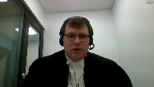
But in broad strokes, the principles are the same.
The Dean trust under the Income Tax Act applies, notwithstanding either the Bankruptcy and Insolvency Act or the CCAA.
And both of those insolvency statutes have proceeding or provisions that provide for the Dean trust to continue in effect, full force in effect, under their proceedings.
Justice Abella (00:05:56): But one of the arguments put against you is that one of the differences is you’re trying to keep a corporation or a company going
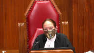
and that’s why you have something like the discretionary provision in section 11 which doesn’t exist under the income tax act.
But it’s your position that notwithstanding the different purposes of the two pieces of legislation or the bankruptcy act and the CCAA the provision should be read the same way.
Speaker 1 (00:06:27): Correctively, yes.

You’ll see as I go through the Crown’s legal argument, you’ll see that in the CCAA, Parliament has had ample opportunity to provide for an override of the deemed trust under the Income Tax Act.
And don’t forget, the Income Tax Act says the deemed trust operates notwithstanding any other enactment, which includes the CCAA.
The Income Tax Act says the Crown’s legal argument does not apply to any other enactment
Justice Côté (00:06:53): I think it’s important to say that the CCA is clear enough.
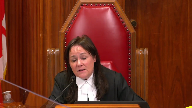
It was not necessary to say that to go that far in the CCA.
Because the CCA is clear enough.
I agree with you that the CCA protects or preserves the trust for deductions, but there’s nothing saying that the priming charges cannot be ordered by a judge.
Speaker 1 (00:07:29): Now, Justice, you’re anticipating part of the argument here, but the answer to that is that in response to this Court’s decision in the Sparrow Electric case, Parliament amended the Income Tax Act and Parliament provided that that Dean Trust operates notwithstanding any provision of any other enactment, except for two provisions of the Bankruptcy and Insolvency Act.
And as the dissenting judge in the Court of Appeal said, that language is as clear as day.
And Parliament has not provided any language in the CCAA to clearly override what it has said in the Income Tax Act is an absolute, unassailable statutory priority.
Justice Karakatsanis (00:08:14): So then, why did Parliament feel it necessary in the Bankruptcy Insolvency Act to explicitly say that this deemed trust is not part of the property, it’s not part of the property that’s available to be distributed to the creditors on insolvency?
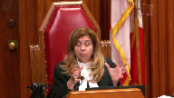
Why did Parliament feel it was necessary to say that if all the work had already been done in the Income Tax Act?
And then I guess the next question to that is, although they say that explicitly in the BIA, there’s nothing similar in the CCAA.
Speaker 1 (00:09:00): Justice, are you referring to a specific provision of the Bankruptcy and Insolvency Act?
Justice Karakatsanis (00:09:05): Just one minute.
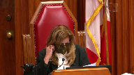
67 sub 1 sub a and then 67 sub 2
and then we’ve got 67 sub 3 that makes it very clear that it’s that the deemed trust is not part of the property.
Speaker 1 (00:09:31): Well, Justice, you have almost an exact parallel to 67.3 in 37.2 of the Companies Creditors Arrangements Act.
And you also have definitions.
You know, we can go back to 2009 when Parliament amended the CCAA to create the explicit authority to grant priming charges.
And remember, before that, the Court was relying on its inherent jurisdiction.
And then Parliament introduces Section 11 and 11.2 and 11.51 and 11.52 and says, here, here’s a statutory authority for the Court to grant priming charges.
But at that time, Parliament does not remove or water down 37 sub 2.
And Parliament does not say in the priming charge provisions, notwithstanding 227.4.1 of the Income Tax Act and its comparable provisions in the EI Act or the CPP, Parliament does not amend 227.4.1 of the Income Tax Act to say notwithstanding any other provision except the Companies Creditors Arrangements Act.
So Parliament gives the Court a discretion, but it’s well established that the Court’s discretion under one statute may not be exercised contrary to the clear provision of another statute, unless the grant of authority makes it explicit that the discretionary authority overrides the other statute.
You have to read our jurors.
Justice Rowe (00:11:07): prudence carefully.
We have enormous inherent powers, I am told.
Justice Brown (00:11:14): Well, you also have to read 11 itself, don’t you, that refers, that subjects that broad authority which is undoubtedly given, there is a very broad authority given to the court under section 11, but that is made subject to restrictions set out in that act and one of those restrictions that I would think is quite significant is that the order made under section 11, when made under section 11.2 for interim financing, attaches only to all or part of the debtor’s property.
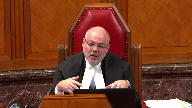
And to continue the argument, it would seem to me reading 227.4.1 that these withholdings are deemed never to have been part of the debtor’s property.
Speaker 1 (00:12:19): Precisely Justice Brown.
The grant of discretion under section 11 is subject to the limitations in the act and the point I was making was that it’s also subject to limitations imposed in other acts that the discretion does not have authority to override but the discretion under section 11 and the priming charge provisions of the CCAA is explicitly subject to the limitations in that act.
One of them being 37-2 which preserves the deemed trust and the unassailable absolute priority is an essential feature of that deemed trust.
You go back to the 1998 amendments and Parliament and the Department of Finance were very clear about their intention in response to this court’s decision in Sparrow but you also have the priming charge provisions themselves say the court may order a charge over the company’s property and as you’ve said Justice Brown and as we argued in our factum by the time the debtor is before the court in a CCAA proceeding they’ve already failed to remit the source deductions.
227 4.1 of the Income Tax Act has already had application to deem their property in the amount of that failure to remit not to be their property and not to be part of their estate and so that property is simply outside the reach of the priming charge judge’s discretion under the CCAA and then you have
Justice Rowe (00:13:49): I’m wondering if the argument which is being put to you by opposing counsel amounts to nothing more trivial, if I can put it to you, than this.
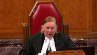
In 37.2 of the CCAA, it refers to 227.4.1 of the Income Tax Act.
Fine, they say, but it doesn’t say expressly in the CCAA the notwithstanding component of 227.4.1.
So referring to it doesn’t incorporate all of its wording because the wording is not reproduced.
But do you have to reproduce the wording when you’ve referred to the provision?
I mean, it’s almost simplistic as that, it seems to me.
Speaker 1 (00:14:45): Well, Justice, I think the answer to your question is clearly, as a matter of elementary statutory interpretation, no, where Parliament has said the provisions of another Act remain in force under this Act, there’s no need for Parliament to reproduce those provisions and specify what parts of that Income Tax Act provision remain effective.
To recast it, Justice, and I just want to finish what I was saying in response to Justice Brown’s question, which is that the three limitations on the priming charge discretion are, one, the discretion is bound by other statutes in the absence of clear language to override them, two, the company’s property doesn’t reach the Dean Trust after the Dean Trust is engaged, and three, the CCAA only allows the Court to alter the priorities of secured creditors, and secured creditors is a term of art defined in the CCAA, and on a plain grammatical reading of the definition of secured creditor in Section 2, the Crown claiming under the Dean Trust is not a secured creditor.
The Crown could be a secured creditor in other regards, in other debts, but not in relation to this Dean Trust.
Justice Karakatsanis (00:16:00): So, can I ask you this, because in your factum at paragraph 95, you cite Professor Wood for the proposition that the Crown’s not a secured creditor.
But I’m wondering what you have to say about his ultimate conclusion, that there’s discretion that the, in section 11 of the CCAA, as opposed to 11.2, 11.51, and 11.52, which rely on the secured creditor concept.
But he says that section 11 gives the court authority to rank a priming charge ahead of the statutory deemed trust for unremitted source deductions.
So, what do you have to say about that argument?
That section 11 is the source of discretion that would allow that, as opposed to the section 11 point, the three that were relied on in the below, the court below.
Speaker 1 (00:17:02): Justice, in response to that, I would restate two points made through the Crown’s argument, which are one, as a, you know, and this is in accord with what the dissenting judge wrote in the Alberta Court of Appeal.
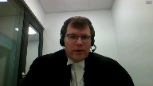
When one statute says this statute operates notwithstanding any other statute.
That’s clear, Paramount C language.
Overlapping speakers (00:17:32): If there’s a conflict, yes.
Speaker 1 (00:17:33): Well, Justice, the interpretation you’re proposing of Section 11 does create that conflict, because now you’re proposing that the court under Section 11 has broad enough discretion to depart from or override another statute.
Justice Karakatsanis (00:17:50): Well, I guess that depends on exactly how far you think 227 4.1 under the ITA goes.
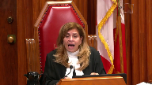
I think your argument is that it takes it out completely from the property of the debtor and that it just doesn’t simply form the property of the debtor.
Therefore, because in solvents the priming charge deals with property of the debtor and because the estate of the debtor is what’s distributed under the bankruptcy act, you’re saying we simply don’t even have to go further than saying it’s not the property of the debtor.
And my question to you earlier was if it’s as simple as that, why does the BIA have to say deal with whether actually affirm that it’s not the property of the debtor for the purposes of distribution?
And I was referring specifically to section 61A and then section 67 1A
and then I think it’s 67 3.
Why would Parliament even need to have those two subsections if, in fact, it was as simple as saying it’s just not the property of the debtor?
Don’t worry about it on restructuring.
Don’t worry about it on insolvency on distribution because it just doesn’t form part of the property.
Isn’t that a simplistic view of property and the rights under property and a simplistic view of beneficial ownership?
Sorry, there’s a lot packed in there.
Speaker 1 (00:19:30): I’m just taking a moment to pull up 67 of the Bankruptcy and Insolvency Act to make sure that I have the provision in front of me that you’re referring to.
Are you looking at a specific paragraph of 67 sub 1?
Justice Abella (00:19:50): A
Speaker 1 (00:20:00): All right, well, Justice, I would say first of all that the property spoken to in 67.1a, which provides that property held in trust for any person is not part of the debtor’s estate for purposes of bankruptcy, clearly is framed in broader terms than just this deemed trust.
Overlapping speakers (00:20:22): Right.
Speaker 1 (00:20:22): And there may be reasons to include that provision that don’t relate to the deemed trust, but to other trust assets that a debtor holds.
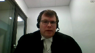
And two, the property deemed held in trust by the debtor for failing to remit source deductions.
I mean, I guess the answer to your question is under 227.4.1 of the Income Tax Act, the property isn’t just deemed to be held in trust.
It’s deemed to form no part of their property.
And I would say 67.1A would not be needed to take the source deduction deemed trust property off the table in a bankruptcy either.
It’s clear from the effect of 227.4.1B that that property is not part of the debtor’s estate for any purpose of any act.
That deeming aspect of 227.4.1 is not restricted in any way by the language of that section to have effect only under the Income Tax Act.
And so, I mean, I hesitate to make arguments about another act that hasn’t been the subject of this case, but it appears to me that the same argument could be made about the Bankruptcy and Insolvency Act that the Crown is making now about the CCAA.
Justice Rowe (00:21:45): It’s interesting, money is fungible.
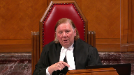
You can’t say, well, that $1,000 over there is mine and that $2,000 over there is yours if you have a bank account which contains $3,000.
It’s not like objects or land or something.
And so in order to put a sort of a cordon around a sum of money, the device which is used, it seems to me, is the deemed trust.
But it amounts to the same thing.
What is within this box is not available for any other purpose other than to be remitted to Her Majesty.
But because money is a fungible asset, you can’t point to a specific object.
You have to assign a dollar amount to it.
And the device to do that is through the deemed trust, it seems to me.
But it has the same effect as saying that car, that piece of land, that bag of gold, that belongs to Her Majesty and no one can make any claim upon it of any nature because it is owed under the Income Tax Act.
I don’t know, that’s just sort of how I see it, I think.
Speaker 1 (00:23:11): Justice, I think that’s a fair characterization, you know, the Dean Trust, the way it operates, and the Court spoke to this in First Vancouver Finance, the Dean Trust doesn’t attach specifically to any one asset in the debtor’s hands at any given time.
It’s not like the Crown can come in and seize a particular asset saying that’s my property under the Dean Trust.
It sort of hovers over all of the property in the debtor’s possession at any point in time, and it says all of this property is subject to Her Majesty’s property in the amount of your debt to Her Majesty, and whenever you turn that property to proceeds, and I’m not talking about selling the property as part of your business, but when you turn that amount to proceeds, Her Majesty gets her her pound of flesh first, effectively, is what it says.
Justice Abella (00:24:01): back to the discretion, sir, that you were talking, that you were being asked about the
Overlapping speakers (00:24:11): Yes.
Justice Abella (00:24:11): Is it fair to read that provision?
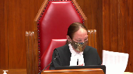
The analysis it seems to me is reading out the words subject to restrictions set out in this act.
That discretion that set out the general power of the court.
And there are at least 2 provisions, 6.3 and 37.2 that expressly take out from the discretion unless I’m reading it incorrectly the deemed trust of the crown.
Am I right about that?
Speaker 1 (00:24:52): Justice, what you’re proposing sounds correct.
The discretion parliament accorded to the Superior Court in the priming charges is explicitly subject to the limitations in the CCAA.
And the Crown’s argument is the CCAA already acknowledges and kind of embeds the priority of the Dean Trust by virtue of 37-2.
And also by virtue of a plain reading of the phrase Justice Brown referred to, the company’s property and the definition of secured creditor.
And I think you might be referring to six sub three.
You’re right, you’re right.
Overlapping speakers (00:25:35): You know, that one prevents the court from sanctioning an arrangement where the crown doesn’t get paid.
Right, that’s exactly right.
Speaker 1 (00:25:41): but as we point out in our factum that section has limited application because it only applies where there’s a plan agreed to by the creditors and then sanctioned by the court and if it doesn’t apply then the Crown’s only protection is is the Dean trust through 37-2 but just to go back a couple of steps sorry before you
Justice Moldaver (00:26:03): back a couple of steps, could I just ask you this please, leaving aside proprietary interests completely.
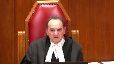
I just need your help on basically one thing.
Let me start off though this way, I would have thought that with 11.2 and 11.5 now you have specific provisions that would take precedence over the general and Parliament brought those in specifically.
So I think that might be an answer to how you can sort of skip around those and go right to 11.
But this really depends to me on whether or not and whether or not priming charges are a security interest under the Income Tax Act and I’d be grateful if I could get your assistance on that because if they are then the only other way that the judge would have in the CCA to get around this would be to find that Her Majesty is a secured creditor and you’ve made arguments to say well that it doesn’t apply under the CCA.
They are not secured creditors under the CCA.
So my question really to you is do these priming charges somehow not become a security interest under the Income Tax Act?
Do you see what I’m saying?
Overlapping speakers (00:27:28): when you’re listening.
Justice Moldaver (00:27:28): look at the definition of security interest under the Income Tax Act, I want to know whether in your view priming charges make it.
Speaker 1 (00:27:39): Justice, your question is is clear and I would echo your preliminary comments that the discretion under section 11 and this court effectively held that in the recent Calidus case that the broad discretion under section 11 can’t be used to go beyond the specific discretion as bounded by the specific provisions given by Parliament or else it effectively neutralizes those provisions.
Now let’s talk about security interests under the Income Tax Act.
Just before you get into that.
Justice Moldaver (00:28:12): Sorry, just before you get into that, I know that under 11, all the sections, they talk about a security or charge.
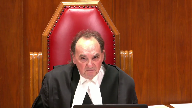
That’s the language that’s used.
And so is there…
And admittedly, the security interest, the primary charges are imposed by a judge.
But does that make a difference in light of the broad definition of security interest under the Income Tax Act that talks about security interest of any kind, whatever, however, or whenever a rising, created, deemed to arise, or otherwise provided for.
So help me out with all that.
Speaker 1 (00:28:52): All right.
Well, Justice, you’ve gone to exactly where I was going to take you, which is that the Income Tax Act has an expansive definition of security interest.
And basically, you have two narratives in front of the court today.
The Crown says, look, the Dean Trust Parliament says absolute priority, we get paid in priority to any other security, to any security interest, and then security interest is any interest or charge given to secure performance of an obligation, however or whenever created, couldn’t be broader.
And the clear intention of Parliament is the Crown, Dean Trust interest prevails over anyone and everything.
And the alternative narrative from the respondents is, well, they don’t, Parliament hasn’t specifically said they prevail over a priming charge, so therefore they don’t.
But this court held in, I think it’s the Cas Populaire de l’Est de Drummond case, that the language of that security interest definition is broad, it is not confined to the specific items listed in that definition, and any interest in the debtor’s property, which is given to secure performance of their obligation, is a security interest, and under the Dean Trust provisions, the Dean Trust will prevail over that claim.
Can’t be broader.
Justice Kasirer (00:30:19): Mr. Taylor, can I follow up on Justice Moldaver’s question and, and thank you for the answer.
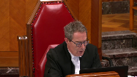
The, I note that your colleagues, at least the monitor, would argue that the court ordered priming charges are not, do not fall within the definition of security interests under 224, 1.3, and contends that the the, the interpretation of security interests has, before the courts has been, has been done in a way that some, what one would normally think of security interests have been excluded, financial leases on occasion, conditional sales agreements, and that the, the better view is that the CCAA priming charges are not included within the definition and then following from that, do not fall within the super priority provision in 227, 4.1.
I wonder what your thoughts are on those arguments.
Speaker 1 (00:31:22): All right.
Justice, the response to those arguments is as follows.
Those cases deal with situations where property has not transferred to the debtor or lessee and then an interest is granted back.
That’s not the scenario.
A conditional sales agreement is, when I buy a car on a conditional sales agreement, I don’t have title to that car until the end.
I’m not granting back an interest in that car as security for my obligation.
Ownership rests with the seller until I perform.
That is different from a security interest.
The security interest definition in the ITA and the related definition of secured creditor clearly contemplate that these interests are interests where it’s the debtor’s property and the debtor grants an interest in their property to a third party to secure their obligation.
I would urge this court not to accept the monitors argument because it simply does not accord with the ordinary meaning and the ordinary reading of the words in that definition of security interest that Justice Moldover pointed to.
Justice Côté (00:32:40): Mr. Taylor, regarding the definition of security interest in the Income Tax Act, you said it’s a very broad definition, and of course it covers a lot, and it says means an interest created by or arising out of, and we have an enumeration, but there is no mention that it covers something created, for instance, by a court order or arising from a court order, which is the case for a priming charge.
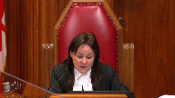
It is essentially made by a court order or created by a court order.
Speaker 1 (00:33:25): Justice, I’m just bringing up the definition of security interest.
Well, with respect, Justice, I think the answer to your question is in the words of the provision.
You’ll see partway through the provision it reads, security interest means any interest in property that secures payment of performance of an obligation and includes an interest arising out of and then it says or encumbrance of any kind whatever however or whenever arising created deemed to arise or otherwise provided for and I would submit that those words are broad enough and they encompass the encumbrance placed on that property by the court’s charging order under the CCAA.
And as this court said in the Caisse Populaire case, this definition can’t be broader and I just want to stress one other point
and this is also addressed by Professor Wood in his article which all parties have commended to the court.
The purpose of this definition is not to say what is a security interest.
The purpose of this definition is to say what does the Crown’s claim prevail over and so Parliament is using security interest here as a term of art for purposes of delineating the bounds of the Crown’s priority under the deemed trust and the Crown’s ability to claim under under other provisions of the Income Tax Act.
And clearly, Parliament is saying the deemed trust interest prevails over any other interest or charge in the debtor’s property however whenever whatever however created.
Overlapping speakers (00:35:29): But, oh, sorry.
Speaker 1 (00:35:31): I was just going to conclude by saying, so the answer to the question about the definition of security interest is on a plain reading of this provision, the priming charge under the CCAA clearly falls within the scope of interests that Parliament has provided the Dean Trust will prevail over.
But more importantly, whether or not that interest fits within this definition is less important than whether or not the Crown is a secured creditor under the meaning of the CCAA.
And this definition does not make the Crown a secured creditor under the CCAA.
The Court of Appeal, the majority and the Chamber’s judge said that it did.
That Parliament, by referring to Dean or actual trust, Parliament is saying a Dean Trust is a secured creditor sort of at large and then apply that to the CCAA.
Well, that’s not a proper reading or a proper application of this provision.
The two definitions and the two different statutes need to be read independently in light of their proper purposes.
Justice Côté (00:36:48): And what about the definition of security in the CCW?
Overlapping speakers (00:36:53): I’m sorry, Justice, I missed part of your question.
Justice Côté (00:36:55): security interest in the income tax act.
My question is, what about the definition of secured creditor under the CCWA?
Because it also refers to a trust.
Speaker 1 (00:37:13): That’s right.
So, what I was saying was the majority of the Court of Appeals said under the definition of secured creditor in CCAA, the Crown is a secured creditor because its Dean Trust interest is a security interest.
It’s a charge.
And they went to the definition of secured security interest in the ITA to find that the Dean Trust gives the Crown the security interest.
And then they applied that in applying secured creditor under the CCAA.
And I’m saying, well, number one, security interest under the ITA doesn’t do what they said it does.
And that’s a misuse of that definition.
Number two, and this is your question now Justice Cote, secured creditor under section two of the CCAA.
When this definition is read grammatically, it’s clear that the beneficiary of a trust is not a secured creditor under the CCAA.
Let’s break that definition down.
Secured creditor, and I’m looking at it now.
You can find it at tab nine of the Crown’s condensed book.
You can have it in front of you.
Secured creditor means, and then it says it means a holder of a mortgage and a list of a number of other things that a debtor, a creditor could hold or a holder of any bond of a company secured by, and then there’s a list, a mortgage, hypotech, pledge, charge, et cetera.
So it’s referring to two different kinds of creditors.
One, the holder of a charge, to the holder of a bond.
And the reference to trust arises as one of the things listed as possible securities for the bond of the company.
It does, the definition does not grammatically read as if a trust is a standalone third category of creditor.
And it wouldn’t be because a trust wouldn’t be a creditor.
The beneficiary of the trust might be a creditor, but a trust wouldn’t be a creditor in the context of this definition.
So if it had said a holder of a mortgage or a holder of a bond or a beneficiary of a trust, then you could potentially interpret this definition as making the beneficiary of a trust, making that interest a secured creditor, but that’s not how the definition reads.
And then if you move a little bit further in the definition, you’ll see it then says whether the holder or beneficiary is resident or domiciled within or outside Canada and a trustee under any trust deed or other instruments securing any of those bonds shall be deemed to be a secured creditor.
So clearly this definition only contemplates a trust as a form of security for the debtor company’s bond.
It does not contemplate a trust as an independent secured creditor.
Justice Moldaver (00:40:13): The majority didn’t say it did.

Actually, they just referred to the word charge and said that could do it.
But really that kind of reads out the distinction that parliament draws when they want to draw between a quote’s charge and a deemed trust.
And you can see that clearly in the income tax act provisions where they include secured creditor and security interest, they include deemed trusts.
But they don’t do that under the CCAA when they’re defining secured creditor, which would suggest that they didn’t intend to include deemed trusts as secured creditors under the CCAA, I would have thought.
Speaker 1 (00:41:00): I would agree with you Justice and that’s a reasonable and logical reading of the provisions.

You can draw additional clues or guides to interpretation from the CCAA itself and the Professor Wood article is excellent reading for the court in that regard.
The CCAA clearly contemplates two kinds of claims by the Crown.
One is where the Crown is a secured creditor under whatever creates its claim.
That’s section I think 38-39 of the CCAA.
The Crown has to register to preserve its priority as a secured creditor.
The other is the Crown’s property claim under 37-2 which derives from the deemed trust and Professor Wood is exactly correct.
The CCAA structure and scheme contemplates two kinds of interests.
Sometimes the Crown claims as an owner of property, a beneficial owner under the deemed trust.
Sometimes the Crown claims as a secured creditor and there’s different regimes under the Act for different types of claims.
It’s the same under the Bankruptcy Act.
The Crown files its deemed trust claim under the Bankruptcy Act as a property claim not as a secured creditor and it was simply wrong in law for the Court of Appeal of Alberta to go to the definition of secured creditor in the Income Tax Act to say to say the Crown is a secured creditor with a charge and then apply that to the definition of secured creditor in the CCAA to say that the Crown falls within the priming charge discretion given to the supervising court.
That’s just an error of law.
Overlapping speakers (00:42:41): Mr. Tate.
Speaker 1 (00:42:42): 227 4.1 of the ITA makes the Crown more than a secured creditor.
It makes it the beneficial owner.
Justice Kasirer (00:42:50): Mr. Taylor, I’d, I’d, if you don’t mind, I’d like to circle back to this question of the, um, about the status of court ordered priming charges and the definition of security interest and, and, uh, I’m, I’m still pre, preoccupied.
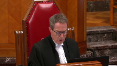
The, the, the question Justice Cote asked about the character of the, these charges being perhaps different in nature from security interests that, that arise, um, by way of agreement between the parties or, or even a non-consensual security interest that arises by operation of law, I think this is taken from Professor Wood, the, the idea that, is that a court ordered charge is unlike those two in that it’s integrally connected to insolvency proceedings that operate for the benefit of the creditors as a group.
And given that difference, one might have expected that it would have been specifically mentioned in the ITA definition of a security interest and, and it is not.
So I’m just wondering what your thoughts are on that.
Speaker 1 (00:44:01): Well, Justice, my response to that would be that, A, the Crown disagrees with Professor Wood in that regard, and B, given the clear and broad language in the definition of security interest, it’s simply not necessary to do what Professor Wood would prefer to see in order to achieve Parliament’s intended result.
Those words I referred, Justice Cote, to a security interest means an interest arising from an encumbrance of any kind, whatever, however, or whenever arising.
A priming charge under the CCAA clearly fits within that.
Clearly within the scope of the Crown’s priority over whatever, you know, in 227.4.1, the Crown has priority over whatever qualifies as a security interest, and security interest is this very, very broad net.
Justice Moldaver (00:44:58): I don’t see how the words could be more broad.
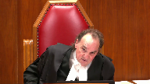
I would have thought that if they intended under the Income Tax Act to exclude priming charges, they would have said it there, save and except for priming charges ordered under sections 11.2 whatever whatever of the CCAA.
Overlapping speakers (00:45:19): Because I’m-
Justice Martin (00:45:20): otherwise.
Justice Moldaver (00:45:20): Otherwise, I can’t think of, as I say, a broader language, any kind, whatever, however, whenever we’re rising.
Speaker 1 (00:45:29): I agree with you completely, Justice, and this is why I began my submission with the history of how these provisions evolved.
Back in the 1990s, this provision came before this court in the Sparrow Electric case, and the court said, guess what, Crown?
You don’t have a priority over someone else’s pre-existing security interest, which is fixed to a property.
And Justice Iacobucci said to the Court, or said to the Crown, in his reasons, you could, Parliament could do it, all they would need is clear language.
That’s in Sparrow Electric, and…
Overlapping speakers (00:46:07): Okay, cool.
Speaker 1 (00:46:08): parliament came back and amended with new language, which frankly couldn’t be clearer.
Justice Côté (00:46:16): I think that’s a good question.
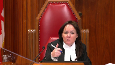
Thank you very much.
Another question for you, one of the respondents, the BDC, is saying that your interpretation of the fiscal statutes and your assertions as to regarding the operation of the notwithstanding clause in section 22714 would render meaningless many provisions of the CCWA would be meaningless, what do you have to say on that?
I think that’s a good question.
They are referring to section 1109, 37.1 and 37.2.
They say if the crown is right in its proposition that 22741 is the end of the debate, then many provisions of the CCWA would be meaningless.
What do you have to
Speaker 1 (00:47:08): Justice, we simply disagree with the respondent about that and I’d refer you to the Crown’s Factum where we address that 6-3 and the Dean Trust deal with different things.
Recall that the employer withholds from its employees wages but then under the Employment Assurance Act and the Canada Pension Plan the employer is also required to make its own contribution and failure to remit these things gives rise to penalties and interest.
Well the Dean Trust doesn’t protect any of those things.
It only protects the amounts withheld from the employees wages and the Crown’s Avenue to recover the rest is protected by 6-3.
Justice Côté (00:47:53): But about 11091, which permit the court to exercise control over the Crown’s interest while monitoring the restructuring proceedings.
Speaker 1 (00:48:06): it permits the court to stay the Crown’s ability to enforce but it doesn’t remove the deemed trust.
That deemed trust priority continues by virtue of 37-2 and if the plan of arrangement fails and the Crown doesn’t get paid, well guess what?
The interest, the penalties, the employer contributions, all of that becomes unsecured.
An unsecured Crown debt.
Like the rest of the Crown’s debts like GST and other Crown debts.
It’s only the employee deductions that are protected by this very special statutory interest in the deemed trust.
Justice Rowe (00:48:41): It’s interesting, going back to what Justice Iacobucci said in Sparrow, that parliament could provide for sort of an absolute priority for the crown if it used clear language.
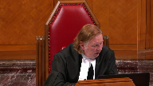
What the draftsman brought forward and what parliament adopted was what I would call categorical language, language in 227, not withstanding any other law, language in the definition of 1.3 of the Income Tax Act, the definition of security interest, encumbrance of any kind whatever.
So the means used was categorical language, which was meant to be all-encompassing, and the argument which is put against you is, ah, but it does not say the specific thing, priming church, and therefore it is not included.
But then it comes back to what is the nature of categorical language, and is that sufficiently clear?
It seems to me we’re getting down to some pretty odd arguments on occasion.
Thank you.
Justice Martin (00:49:58): Mr. Taylor, may I ask you a question on something else?
Please answer this first, though.
Speaker 1 (00:50:05): All right.
Justice Roe, with respect, the respondents are taking us in circles.
Parliament has said, in the clearest possible terms, this interest prevails.
And then they go and they say, well, respondents, you haven’t specifically said these other things.
So if Parliament comes back and amends and says, well, notwithstanding these provisions of the CCAA, they start expanding this notwithstanding provision, we’re just going to end up again in interpretive circles.
This is, as the dissenting judge said, the clearest possible paramountcy is accorded to the deemed trust.
Parliament could not be clearer.
And I just want to add one more point
and then I’ll go to Justice Martin’s question.
And this point is that, you know, many years after Sparrow and these amendments, after a long consultation process, Parliament came back to this issue and amended the CCAA to give the court a clear statutory authority for priming charges.
At that point, if Parliament intended priming charges to prevail over this very clear notwithstanding provision, Parliament could have put language in either the CCAA or the Income Tax Act to say, well, priming charges are excluded from the scope of the deemed trust.
Priming charges override the deemed trust.
It could have been done by amending 227.4.1 to carve out priming charges, or it could have been done by amending the CCAA to specify that it operates notwithstanding the Income Tax Act.
And then we would have had a situation like the Century Services case where both statutes said notwithstanding or despite any other enactment.
But we don’t have that situation.
Parliament left 327.2 as is, Parliament left 227.4.1 as is, and Parliament accorded the court this discretion which is bounded by the terms of the definitions of the operative concepts in Section 2 of the CCAA.
So with respect, the only conclusion we can reach is Parliament had no intention to weaken the deemed trust for source deductions when it amended the CCAA to enact priming charge provisions.
Ample opportunity to make that clear, Parliament didn’t do that.
Justice Martin, you have a question.
Justice Martin (00:52:30): Yes, and it’s on your paragraph 63 from your factum.
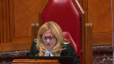
And my question is more of a factual and background one to make sure that I fully understand the implications.
And I want to start with the effect on the employees who have paid the source or have paid the source deduction to the extent that they didn’t receive it when it remains unremitted and unpaid to the crown.
You say here that the employees are entitled to credit those amounts against their annual tax liability.
And so from that, I think that what you’re saying is that regardless of whether or not the priming charge comes first or the deemed trust comes first in the priority system that we’re discussing in the various legislation, that the employee will always be credited with that amount in the individual tax, in the individual tax situation.
Is that a correct assumption?
Speaker 1 (00:53:41): Yes, Justice, that’s correct.
The Income Tax Act doesn’t actually speak to this.
Overlapping speakers (00:53:47): It’s the law.
Speaker 1 (00:53:48): of agency and constructive receipt.
The employer withholds that money from the employee as agent for the crown.
The crown is deemed to have constructively received it.
The crown has no basis to go and pursue the employee if the employer doesn’t remit those funds.
And the employee, that’s why as an employee, you and I, when we fill out our tax return, we can deduct those amounts withheld at source from our balance owing because they’re already paid.
So, from our.
Justice Martin (00:54:19): When we’re looking at it in an overview sense, we do not have to be concerned with any interests that might be held by the employee in this circumstance.
It’s just the other interests that are at play.
Speaker 1 (00:54:34): I think that’s fair the the employees have no interest in these funds but I do think going back to what I said at the start about the the view from 10,000 feet here you have money that was earned by the employees it’s part of their wages and it’s remitted you know it’s withheld from them on the express understanding it will be remitted on account of their tax and the court of appeals decision permits that money to effectively be conscripted into the restructuring for the benefit of lenders and insolvency practitioners and others and that to us that provides a very clear explanation for why parliament would create this very special priority for these very special amounts they were never the employer’s property and they never should be available to the other stakeholders in the insolvency.
Justice Abella (00:55:29): Thank you.
That was set out, wasn’t it, in the press release that accompanied the legislation and that Justice Wakeling referred to in his reasons of paragraph 153, the impact on employees.
Thank you, Mr. Mayor, members of the public.
Speaker 1 (00:55:43): Yes, Justice, it’s there.
That money was the employees’ wages.
I want to thank the court.
Your questions have anticipated most of my legal arguments, but I did have a couple of…
Overlapping speakers (00:56:06): Well, I do have another question if you’re enjoying the questions.
Speaker 1 (00:56:12): I don’t know that I would go that far, but I’m happy to answer your questions to the best of my ability.
Justice Karakatsanis (00:56:17): I’m just wondering why you think the beneficiary of a deemed trust has exactly the same kind of entitlements that we associate with the beneficiary of a true trust.
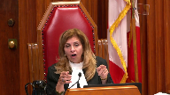
Don’t we need to look at the actual scheme and the actual terms of the legislation to determine what rights follow, what are the rights of the beneficial owner in a deemed trust?
Because it seems to me that everything really is equating it with a full property ownership, with a full, with all the rights that go with a true trust and I think we would all agree here that this isn’t a true trust, a common law, it’s a statutory deemed trust.
Speaker 1 (00:57:07): Justice, I would agree with the premise of your question and this court, I think in the first Vancouver’s case, said quite clearly, the deemed trust is a statutory creature.
So it’s not a common law trust and it’s not bound by the requirements of the common law trust so it can exist.
For example, even if the three certainties are not present, the question is, does the language of the statute give the Crown sufficient ownership interest to take it out of the scope of a security interest?
And with respect, it does.
And that language in 227.4.1, deeming the Crown to be the beneficial owner?
Well, that was part of the 1998 amendment press release that that was part of Parliament’s response was to buttress the Crown’s position.
Overlapping speakers (00:57:54): Yeah.
Speaker 1 (00:57:55): by saying, hey, this property isn’t just held in trust.
It’s deemed to be beneficially owned by the crown and it’s deemed not to be property of the employer anymore.
Justice Karakatsanis (00:58:02): Isn’t that the same kind of language that the provinces use?
They all say keep separate and apart from the property of, that it’s deemed to be, you know, doesn’t form property of the debtor, beneficial ownership.
I mean, that’s the same language, I think, that they were looking at in Hanfrey.
And so, if you’re right, and that kind of language alone gives you full property rights, such that it’s just not part of the property of the debtor, even though the debtor still can deal with it, why wouldn’t all of the provincial trusts, then, be dealt with the same way, and just be outside of the property under the CCAA, and just the priming charge wouldn’t even go there?
If it’s as simple as that, if property’s just, if it’s an all-or-nothing proposition, I just…
I wonder…
Justice Brown (00:58:53): If we’re really talking about all or nothing propositions because the concluding words of section 227 4.1, and you’ll correct me if I’m wrong, tell me what it means to be as Her Majesty the beneficial owner and the right that comes with being a beneficial owner and that is the right to have the proceeds of that property paid out in priority to all security interests.
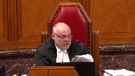
Justice Kasirer (00:59:26): Mr. Taylor, to make it even more fun, this Income Tax Act of course has application across the country and beneficial owner doesn’t ring true in the ears of a Quebec jurist where beneficial ownership is of uncertain status if it even exists.
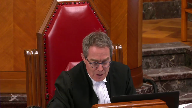
Justice Wagner (00:59:46): Now you have the right to answer.
Speaker 1 (00:59:51): All right well I have two minutes left
so I’ll do my best to answer all of those questions before time expires.
And the answer is in terms of the provincial deemed trust the provincial deemed trusts do say those things but a they don’t say notwithstanding any other enactment of Canada and they can’t constitutionally they can’t do that they can’t override parliament’s legislation in insolvency they can’t say provinces are creating for themselves special priorities in insolvency that’s an area federal jurisdiction but parliament can parliament can create a special priority for the crown in insolvency and parliament did and the other the other point in response to Justice Brown’s question is as beneficial owner the crown has this kind of entitlement that sits over all property but as I think I said earlier the crown can’t walk in and seize an asset to realize its beneficial entitlement the crown can’t say as the beneficiary of a common law trust can you know hey give me back give me back the trust property trustee the crown has to wait the crown’s entitlement is realized when assets are liquidated and proceeds arise then the crown gets those proceeds first and simply put the CCAA does not give the court priority to put another creditor in in the front of the line in front of the crown in relation to those proceeds and that is what a priming charge does and so in the last few seconds if you the court will allow me to finish with one sentence i’ll go back to the history of the deem trust and the story that has played out in the jurisprudence before this court parliament clearly thought it had given the crown an absolute priority in sparrow this court said no you know what you didn’t you were wrong parliament came back
and they said well we’re doing it now they’ve done it as clear as can be as plain as day they could not be clearer and that language should be given effect
Justice Wagner (01:02:04): Thank you very much.
The court will take its morning break.
15 minutes.
The court will take its morning break.
Justice Rowe (01:02:56): Le court, le court!
Justice Karakatsanis (01:03:00): back to where I was.
Justice Wagner (01:03:04): Yeah, yeah, yeah.
Justice Moldaver (01:03:04): You
Justice Wagner (01:03:23): Mr. Oliver?
Speaker 2 (01:03:30): Good morning Justices.
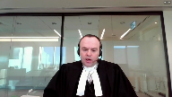
Jeffrey Oliver appearing on behalf of the Respondent Business Development Bank of Canada.
We intend to generally in our submissions follow the points referenced in our condensed book.
Our submissions will be divided as between Ms. Buttery and I on behalf of BDC as there are multiple respondents who will be speaking in the 60 minutes of allotted time.
I will endeavor to be as focused as possible.
I intend to address two points.
First, I will provide an introduction in which I will address how the interpretation of the fiscal statutes and the CCAA that’s urged by the respondents is consistent with and further the objectives of both the fiscal statutes and the CCAA and discuss how the appellant’s position does not.
Second, I will address why the Alberta Court of Appeal and Court of Queen’s Bench correctly determined that the deemed trusts under the fiscal statutes are in fact security interests and not proprietary interests.
I made during my submissions reference the deemed trust provisions of the fiscal statute so it may be helpful to have those handy.
Ms. Buttery will be addressing Section 37 of the CCAA and matters relevant to the exercise of the court’s discretion and jurisdiction including the Century Services case.
So by way of introduction, while we say this appeal can be resolved through a correct reading of the fiscal statutes and the CCAA, as per the Century Services decision, policy objectives of the CCAA have to be considered when considering the appropriateness of an order that is granted under that statute.
And since statutory interpretation does not take place in a vacuum, the court is entitled to consider the underlying policy objectives of each of the fiscal statutes and the CCAA so that they can work in a concurrent and proper fashion.
Justice Rowe (01:05:56): suggesting that we sort of say well here’s one way of viewing the CCAA and its objectives and here’s some objectives over here in the Income Tax Act.
We like these objectives over here and therefore that’s the basis of our interpretation.
We’re coming very, very close to suggesting that.
Speaker 2 (01:06:16): No, sir, that’s not what our position is.
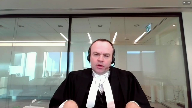
Clearly, the text of the relevant statutes obviously form the dominant interpretive exercise, but in interpreting how the statutes work in tandem, the interpretation of how that occurs must be had with regard to the objectives of both sections of legislation to ensure that the objectives of one piece of legislation does not override the other, unless that is obviously made patently clear by the…
Justice Rowe (01:06:57): What about if one piece of legislation says notwithstanding any other law, is that relevant?
Speaker 2 (01:07:06): absolutely it’s a relevant consideration and of course the CCAA says
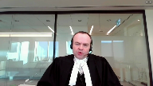
that in section 37 as well when it first nullifies and then essentially preserves the section 37 deemed trust.
So those are absolutely relevant considerations for this for this court and we’re not suggesting otherwise.
Justice Brown (01:07:31): and yet you take us, you skip over that text and you want to talk about objectives.
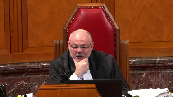
Do we understand the text in light of objectives or do we just simply skip over object and go to objectives?
I’m just wondering about your methodology.
I’ve always thought that we start with the text and then we interpret the text in light of the legislator’s purpose.
Speaker 2 (01:08:04): So that’s correct and that’s certainly what I’m suggesting.
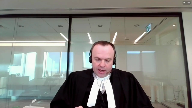
But my order of presentation this morning because you have spent time with the statutes was to obviously talk about purpose, but certainly we will be going into what the text of the relevant statutes say.
But I don’t disagree with you, Justice Brown.
The interpretation that is suggested by the appellants is one which will, as we have indicated, impair restructurings and prevent the appellants from effectively being paid the deemed trust claims that they are entitled to.
It will chill restructuring processes.
And the importance of priming charges has been mentioned in the materials of numerous parties that are before you.
And the ability of a debtor to engage in a collective proceeding in which a court can issue an order that will affect the interests of all stakeholders is a powerful and necessary tool.
And if priority is not given to interim lenders and solvency professionals and other interested parties, those parties are less likely to participate and the system is at risk.
So priority is important.
It is critical, in fact.
And without it, the respondent is concerned that the system will not work in the manner intended.
Justice Abella (01:09:46): Since we’re dealing in this case as we know with the situation where there was in fact enough money for everything to be paid out that was supposed to be paid out including the priming charges, are you suggesting that the scheme should look to first of all a kind of discretion to determine first whether there is in fact enough money to do both before deciding whether or not to impose that the requirements of 227.4, it seems like you’re building in an additional discretion or are you just saying priming charges no matter what?
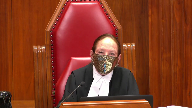
Just read in those priorities even though the government didn’t do that when it wrote sections 11.5, I can’t remember what exactly they are.
So they could have written in priorities for the priming charges but didn’t
and so we are to conclude what?
Speaker 2 (01:10:52): That’s a good question.
The discretion to order priority charges in any proceeding remain in the purview of the CCAA supervising justice and my partner will address this in more detail.
But ey makes this point in their factum which is if on a case by case basis it certainly remains possible and for the Crown to argue successfully that the facts of that case do not justify a priority charge and that is that is no different than any other than any other secured lender or other stakeholder in a proceeding.
That ability is always there.
Justice Karakatsanis (01:11:45): But what about the flip side?
And I guess my question really is if, in fact, 11.2 and 11.51 and 0.52 in fact do not provide the kind of priority you’re submitting, why wouldn’t we do the reverse under section 11?
What do you say about section 11 and the availability to, in fact, deal with priority as between the deemed trust and the priming charges?
It would be the same kind of discretion that you’ve talked about but in reverse, and it would also meet the same kind of objective and purposes you’ve talked about.
Speaker 2 (01:12:32): Well, and that in fact, as you will, as you recall, is a point that’s made by Mr. Wood in his article, and Ms. Buttery will be touching on this, but that is an avenue in the hierarchy of discretion that is available that remains.
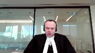
So the hierarchy would be beginning with the charges that you referenced, 11-2, 11-5-2, et cetera, then the jurisdiction resides generally in 11, which largely, and then after that, if resort is required to inherent jurisdiction, then so be it.
So yes, that avenue would be available, didn’t arise in this case, but I would submit that is a possibility as Mr. Wood indicates.
Justice Côté (01:13:30): Is it, in fact, in practice, is it not a fact that this section 11 is used, for instance, to give a super priority to key employees who are not directors or officers?
Speaker 2 (01:13:44): Yes, the variety of charges that have been ordered in these proceedings is slightly short of endless.
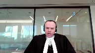
It could be key employees, certain forms of amounts payable to sales agents in a sales process.
There’s endless amounts.
One of the comments that Mr. Wood makes is some of the potential interpretive difficulties if the discretion is truly limited as indicated with section 11 relative to those other charges, you risk ending up with some circular priorities.
So that is why the discretion in 11 is available.
It’s to avoid that circumstance.
Justice Abella (01:14:41): Does that discretion override the specificity that we find in section 6.3 and 37.2 of the same legislation?
Speaker 2 (01:14:57): The discretion is subject to the terms of the CCAA.
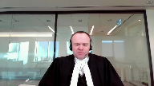
So I don’t believe, for example, if this is your question, Justice, that it would remain possible for a CCAA judge to order that a deemed trust is not effective relative to other secured creditors.
As you know, our position is that trust relative to other secured creditors is preserved.
But it does remain open to order, we say, a priority charge because the deemed trust provisions are effectively incorporated into the CCAA as a result of 37.
Justice Rowe (01:15:47): Isn’t it as simple as who’s first in line?
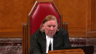
I mean, can the applications judge say, oh, the priming charges, that’s first in line?
Or is the application judge constrained in saying that and saying, priming charges are first in line, subject to the deemed trust under the Income Tax Act?
Speaker 2 (01:16:11): on a case-by-case basis, the justice is entitled to say that in the exercise of their discretion that the charges should be subordinate to the dean’s trust.
Justice Rowe (01:16:22): I’m saying, doesn’t it come down to as a question of law, is it open to the applications judge to say, I’m gonna put the priming charges first, or is the judge in a position where the discretion is constrained such that that order cannot be rendered lawfully, and only an order of the following nature could be ordered, the priming charges are first save for the deemed trust under the Income Tax Act.
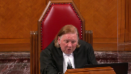
That’s the legal question, is it not?
Speaker 2 (01:17:01): So we say there is no lawful impediment to the court ordering the priming charges in priority to the deemed trust.
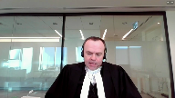
And the basis for that is the interpretive exercise that you were discussing with my friend in which I’ll perhaps go into next with respect to whether a deemed trust is in fact a security interest or a property interest.
So I’ll perhaps shift into that noting the time.
So as we’ve noted in our materials, there have been instances in the past where courts have actually determined that the deemed trust interests under the fiscal statutes are security interests and just free information.
There’s the Federal Court of Appeal decision in the National Bank case, which is at tab three of the condensed book.
Obviously there is also the decision in Temple City housing.
But when you look at what we say is the accepted interpretive practice of a presumption of statutory coherence, there is no conflict between the fiscal statutes and the CCAA.
And that analysis begins with the discussion of the Income Tax Act and the CCAA and the relative definitions of security interest and secured creditor.
And as the court is aware, the definition in the Income Tax Act and other fiscal statutes defines a security interest as including specifically a deemed or actual trust.
The language is obviously broad as you have already indicated.
The CCAA references a holder of a charge, which the Court of Appeal found was sufficient to bring a deemed trust into it, but also contains language that also suggests that the holder of a trust is also a secured creditor.
But that seems-
Justice Brown (01:19:30): That would seem to cut against you, I would think.
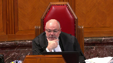
In as much as the definition in the Income Tax Act refers to a deemed or actual trust, and the definition in the CCAA just refers to a trust, it would seem, if you’re going to apply this presumption of statutory coherence that you invoke, that we should ascribe some significance to Parliament’s decision not to include a reference to a deemed trust in the CCAA definition.
Speaker 2 (01:20:08): I respectfully don’t agree with that suggestion and sir and the reason being is as we’ve indicated the secured creditor definition and I will come to this why we say when you look at a deemed trust in essence and how it operates it is a device to secure the payment or performance of an obligation and in essence when you when you strip back and look at the at the substance of what the deemed trust is the deemed trust is in essence a charge so I don’t think we get to the

Justice Brown (01:20:52): This is your argument, as I recall from the fact that if it were a true trust, only a true trust would allow the crown to enjoy a proprietary interest in the debtor’s property because then because a proprietary interest presupposes trust property which presupposes certainty of subject matter.
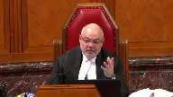
Am I recounting your argument fairly? Yes.
So I’m wondering…
I’m wondering whether that argument gets you anywhere because Justice Iacobucci in First Vancouver acknowledges that there’s no certainty of subject matter from the date of the creation of the trust and as such it’s not a real trust, a trust, an equity trust in the sense of being a common law trust.
But then he points to what is now 227 sub 1.4 which, and this is his language, he says it revitalizes the trust whose subject matter has, and here I’m paraphrasing, no identity.
And of course this is his floating charge point.
The identification of the subject matter of this trust arises after the fact when the crown acquires a statutory right of access to whatever assets the employer has out of which it recognizes the original trust debt owing.
And I put that to you because my sense looking at 227 sub 4.1 is that this is surely right because that section actually describes the corpus of the trust that arises.
So it states the subject matter, an amount deemed by subsection 4 to be held by a person trusts her majesty equal in value to the amount so deemed to be held in trust.
In other words, the amount required to be held in trust is the subject matter of the trust and of the person’s property interest as trust beneficiary.
And while I’ve got you on that, you dispute that at paragraph 54b of your fact and you quote Chief Justice Noel’s decision in national bank as stating that is irrelevant that that section 227 4.1 uses the words beneficially owned to describe the CRA’s interest in the tax debtor’s property under that subsection.
In the course of answering this long-winded question, I would like you to direct me to where in the judgment he says that because I couldn’t find it.
And in fact, what he does say seems to me to put paid to that argument at paragraph 50 he says in this case, parliament’s intention is not hard to decipher.
Parliament evidently wish to confer on the crown an ongoing interest in the property that is deemed to be held in trust for as long as the tax debtor’s default persists and to subject the secured creditor to the obligation to remit to the receiver general the proceeds arising from the property held in trust in absolute priority to the extent of the unpaid debt.
This is an important point, so I’m sorry to have gone on at length, but I see that as a comprehensive answer to your concern about this being a mere deemed trust and not a real trust.
Speaker 2 (01:24:39): Thank you.
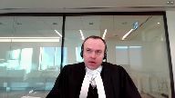
So my answer to that question, Justice Brown, is that if you look at the language just by way of analogy to provincial property security legislation, the concept of charges, and I don’t think the Income Tax Act is any different, is to look at form over substance.
So is the beneficial interest or is the trust geared towards securing the payment or performance of an obligation?
And if you look at in this, how the deemed trust works in this instance, the sections of the Income Tax Act that are at reference and the other fiscal statutes don’t seem to entitle the Crown to take ownership of property or to basically set off the amount of the deemed trust.
In practice, CRA does not say to receivers or to trustees, we’ll take this equipment and transfer it to the Department of Public Works and we’ll call it even.
This is geared towards generating proceeds payable to the receiver general.
So whether it is ultimately a trust or some other interest, what we are looking at, at its core, is a security device to secure the payment and performance of the deemed trust obligation.
Justice Moldaver (01:26:26): I’ll assume that’s right for a moment.

I mean, I don’t think that’s the right question here initially.
I think the right question is, does a priming charge create a security interest?
Because no matter how you cut it, 227.4 says this has priority over every other security interest.
So it seems to me that if in fact the priming charges are security interests under the Income Tax Act, we don’t even need to go there.
We just jump right from there into is the Crown a secured creditor under the CCAA, not the Income Tax Act.
Speaker 2 (01:27:06): In light of the fact that Ms. Buttery was going to speak to that, perhaps it would be a good time for me to turn the virtual podium over to my colleague.
Speaker 3 (01:27:19): Good morning, still morning at least, and the West Coast.
For the record, Mary Buttrey, co-council for the Respondent Business Development Bank of Canada.
I’ll be starting at what is paragraph 23 of our factum, although I’m not going to.
I’m sure you’ll be relieved to hear going to read my factum to you.
And I am going to talk about three points.
The first is that deemed trusts are subject to the CCAA regime and must be considered in the context of the CCAA and not the Income Tax Act.
The second is that the appellant’s position is inconsistent with the case law from this court as well as the rules of statutory interpretation.
And finally, that CCAA courts have the jurisdiction to subordinate the deemed trusts and the priming charges, both specifically with reference to 11.2 11.51, 11.52, and section 11 of the CCAA.
So we start with the premise that deemed trusts are subject to the CCAA.
They are specifically referenced in the CCAA.
The appellant argues that pursuant to the use of the notwithstanding clause in 227-4-1 of the Income Tax Act, the Crown is to use his language unambiguously given an absolute unassailable right to the debtor’s property that cannot be changed by operation of the CCAA and that the status of an interest in property under other legislation can’t affect that right as enunciated in the Income Tax Act.
However, it’s acknowledged that several provisions of the CCAA deal with deemed trusts and that’s where we say the inconsistency in the Crown’s argument becomes apparent.
Do we care?
Justice Brown (01:29:16): do we care?
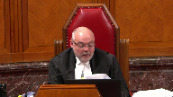
Even if you are right about that, that there’s an inconsistency.
That notwithstanding clause seems as Justice Roe says categorical.
Notwithstanding any other enactment of Canada, any enactment of a province or any law, an amount deemed in sub four to be held in trust for her majesty is deemed to be held from the time it was withheld, separate and apart, it forms no estate, it’s beneficially owned and it will be paid out in priority to all such security interests.
Assuming this is a security interest, which I know we’re going to hear from you about, why do we care what the CCAA says?
Other than the policy arguments which you have to take up the hill from us there.
Write your MP.
Speaker 3 (01:30:21): um we care for two reasons the first is and and it this actually segues segways right into uh the point i was going to make next so thank you is the fact that the obviously the income tax act creates the deemed trust and pursue it to section 37 2 that’s recognized so essentially 37 1 as we’ve discussed takes away the right of deemed most deemed trust and then 37 to preserve certain rights in this case the ones we’re talking about source deductions however i think it’s instructive to consider that there’s nothing that says we that notwithstanding doesn’t get the appellant there to say that the deemed trusts cannot be primed by the priming charges so our submission is yes the deemed trusts exist the source deductions exist that’s that’s my
Justice Rowe (01:31:21): That’s my point about the categorical.
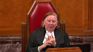
The categorical, in formal logic, I mean, maybe legal logic is different.
Let me just throw out formal logic.
The categorical includes the specific.
But you’re saying, even though the language is categorical, the fact that an order of an applications judge giving priority to priming charges isn’t specifically referred to, well, there you go.
The whole notwithstanding argument collapses because you haven’t used the magic words referring to that specific exercise of authority.
The contrary argument is simple.
The notwithstanding wording refers to the statute and any other law.
So it’s like, does the categorical include the specific?
If you think it does, I think you go one way.
If you think, oh, no, it has to enumerate each and every potential application of authority, then I guess you go the other way.
Speaker 3 (01:32:27): Well with respect I think that the point that I was trying to make is that the you consider the context of the deemed trust and the priority that the source deductions enjoy within the context of the CCAA
and so I guess my answer to your question is do they have to be categorical in the CCAA?
My submission is yes but even if you go to the Income Tax Act and looked at section 227 4.1 and I’m getting a little bit ahead of myself in my argument
but I think I’ll be able to find myself again it’s clear from the bottom for lack of a better word the bottom language the the concluding language of that section that it’s intended that the extension of the trust that’s referenced in the Income Tax Act is really nothing more than to secure the payment of an obligation and that is borne out when you look at those provisions that section in the bottom of the section and it reads I’m just reading from it now is properly beneficially owned by Her Majesty there is some discrepancy as to what actually beneficially owned means notwithstanding any security interest in such property and in the proceeds thereof and the proceeds of such property shall be paid to the receiver general in priority to all such security interests.
We say therein lies the rub with respect to the appellant’s position it’s not and I think my my friend Mr. Oliver referenced this they’re not going to take a tractor and drive it down the road they’re interested in getting paid for their deemed trust in that respect this section 227 4.1 is nothing more frankly than a security interest to secure the payment of the source deductions.
Justice Rowe (01:34:15): Doesn’t it doesn’t it really say we’re number one no matter what?
Speaker 3 (01:34:22): 227.4.1. 227.4.1.
Justice Rowe (01:34:28): I don’t think it does.
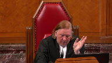
I mean, one way to read it is really simple.
That is, this charge comes ahead of everything else, pointe finale.
And you say, oh, no, it kind of looks like that, but you gotta look at these other acts and you see that there’s competing views and alternate views.
So don’t get hung up on the particular wording that says it operates notwithstanding everything in the universe.
Speaker 3 (01:34:57): And we’re not saying it doesn’t operate.
What we’re saying is that its priority can be compromised pursuant to the provisions of the CCAA.
Justice Brown (01:35:07): Can I ask you what you say then about the argument that one of the restrictions contemplated by section 11 of the CCAA is that it has to be some or all of the debtor’s property and that 227.4.1 is quite clear that the property captured by the deemed trust forms no part of the estate or property of the debtor.
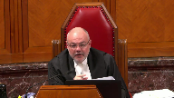
Speaker 3 (01:35:37): Well, I think the problem, there’s two points, and I’ll just try to make a note so I don’t forget to address both of them.
The first is that, and it’s even referenced in the appellant’s material, at the time of insolvency, it’s not unusual for the Crown to not know what the quantum of the source deductions is.
And that is because, as the Crown puts it, they are, quote, an involuntary creditor.
I think most people are involuntary creditors, certainly involuntary unpaid creditors, but the Crown is at that circumstance.
So if we accede to the Crown’s argument in total, what it would mean is, frankly, none of the property of the debtor actually forms the property of the debtor until such time as the appellant can quantify that amount.
And that surely can’t be what is intended.
And that’s why I say, and this is the second part of our submission, that’s why we say first it is an exercise of discretion, which I will close with, but it is an exercise of discretion, and why it says in section 11, some or all of the part of the property.
And that allows a CCAA supervising judge to consider what portion of the property it can, he or she can, prime with these priming charges.
And it may be that a CCAA judge says, we don’t know what the deemed trust amount is.
We’re going to assume it’s not all of the value of the enterprise.
And so I’m going to allow these priming charges, for example, to sit on top of the priority scheme to a certain amount of money.
And you will see, and in this case as well, in the Canada North case, the quantum of the priority charges is a capped amount.
It’s never a full amount of all of the fees that could possibly be incurred in the furtherance of the CCAA restructuring.
There is always a capped amount, a charge amount that is set forth.
And we say that this means that section 11 and the ability to grant the priming charges can be read therefore harmoniously with the 227-41.
What’s the judge doing?
Dividing how much is sold?
I mean, I don’t understand it.
Sometimes. Sorry?
Sometimes, my sword.
You know, if the government doesn’t…
Justice Moldaver (01:38:07): know how is the judge supposed to know and unless unless the creditors are somehow you know apprised of this information but other creditors
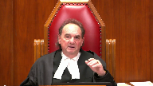
but I just don’t understand the logic of that is the judge just making an educated guess yeah
there’ll be enough here what I would prefer to turn it around the crown can be a part of this proceeding as I understand it and if the crown chooses to say look we’re prepared to give you an accommodation on this because we feel that there’ll be enough here to cover things so go ahead judge and appoint monitor and so on and so forth up to a certain amount nothing to stop the crown from doing that and in terms of its interest in a restructuring as opposed to a bankruptcy
but I think you’ve got the cart before the horse or the horse before the cart or something by saying the judge can just divine a figure
Speaker 3 (01:39:06): No, no, my Lord.
Sorry, my BC roots are showing no justice.
My point is this, that there is, first of all, I have to say with all due respect to the Crown, I’ve never seen them give up any quantum of a claim and a restructuring.
But even if they were to do that, the court and the parties are assisted by, ironically, some of the parties who have the benefit of the administration charge.
And the court, a CCAA supervising court has a monitor who is described in all CCAA proceedings.
I’m sure all of you justices are familiar with the concept that they are the eyes and ears of the CCAA supervising court.
And when a company initially seeks CCAA protection, the CCAA was amended just recently to provide that we have a very short initial order.
And the charges that are granted are usually very minimal and expanded after a 10 day period.
But the court isn’t divining that number out of the air.
The court is assisted by the books and records of the company, and is also assisted by the monitor in assessing what is fair, having regard to all of the circumstances.
But it is the case in most insolvencies where there is a fear, unlike what happened in this case, thankfully, but in most insolvencies, there isn’t enough money to go around.
And the court, the court in my province in British Columbia, I believe it was in the Schina Stelios matter said, and I’m sorry, it’s not in front of you, but it said, they said that the court has to be vigilant to be concerned with respect to the posturing of all of the creditors, because of course, there isn’t enough money to go around.
We say this is why Section 11 grants the court this broad discretion to move forward to grant the super priority priming charges in the face of the 227 deemed trust, because it it needs to balance all of those interests and to prevent the jostling amongst creditors.
And in this case, to prevent the ambit of Section 227 which read on its face would create a situation where priming charges could never be granted in respect of any of the property until a debtor until the quantum of that claim is determined.
Justice Brown (01:41:32): Well, if what we seem to be calling the notwithstanding clause appeared in section 11 of the CCAA instead of section 227.4.1 of the income tax act, I think I’d agree with you.
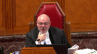
But you say in the face of 227.4.1, well, in the face of 227.4.1 includes a clause that I’m having difficulties getting over this because it could not be possibly broader.
So long as we’re talking about the priming charges as a security interest and we want to hear from you on that, help me get over this.
Help me get over my impoverished understanding of how these statutes work together merely because I’ve got statutory text in front of me that says we don’t care what anything else says.
Here’s the deal.
The crown takes priority.
Speaker 3 (01:42:30): They say no and they say that with respect um justice they say the property they don’t it doesn’t actually say that the crown takes priority it says and i’m looking at this section
Justice Brown (01:42:43): priority to all such security interests.
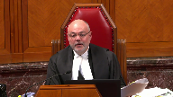
The proceeds of such property shall be paid to the receiver general.
Now, granted, they’re not taking the combine, but I’m not sure how significant that is.
Her Majesty does not want a combine.
Her Majesty wants cold hard cash.
Yes, and that’s clear from this section. Right.
Speaker 3 (01:43:02): Yes, the notwithstanding clause provides we say that notwithstanding anything else that the Crown enjoys a deemed trust and the deemed trust if you read it down to the bottom is that property beneficially owned notwithstanding in such property shall be paid to the Receiver General in priority to all such security interests.
So what we have here is does the Crown, I think the question is twofold.
Does the Crown enjoy priority over all of the property or over or to the extent to which it has a deemed trust claim?
Because this seems to be fairly broad reaching that it has a security claim over all of it.
But also the issue and Mr. Begannick feels like we’re passing a hot potato down the road and I don’t mean to at all, but Mr. Begannick is going to deal with in his 20 minutes is going to be dealing with the fact that the priming charges aren’t in fact security interests as they are considered in the C-STEP way because of the nature of their trust.
Justice Wagner (01:44:10): Thank you, just Sabella has the last question for you.
Justice Abella (01:44:14): Sometime earlier in the arguments that you and your colleague made was a discussion about the role of statutory interpretation.
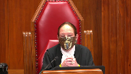
And I’m still, it would be really helpful to me if you could tell me what you mean by statutory, what the purpose is of which provision and how we look at that.
And let me tell you what’s on my mind.
Pro electric is decided.
The court says you cannot exempt the royal bank’s general security agreement or inventory sale proceeds.
It needs clear language.
As a result, the parliament responds with clear language.
And I don’t know when section 11 came into being and particularly 11.2.5.1 and 5.2.
But those are broad discretionary provisions.
The only express clear language provision following sparrow electric is in 37.2 and 6.3 which protects the crown’s priority.
So my question to you is what is there about how we look at statutory interpretation and the objectives that give us permission to read may, the word may in all of the provisions that would grant primary charges priority because I’m not finding it, but I would appreciate your help on it.
Speaker 3 (01:45:54): Yes so I think it’s clear that the CCAA considers source deductions and that’s where I started in mind and section 37-2 preserves source deductions but we say doesn’t speak to their priority and we say doesn’t engage Justice Brown the notwithstanding clause in Justice Roe the notwithstanding clause of 227 4.1 because it is a simple paragraph that simply preserves source deductions but not their priority and in this this court and Century Services and others and I know I’m out of time
so I’m going to be quite quick and then I’m going to get I’m getting to your question in this it described the section 37 sub 2 source deductions as a priority to payment not an absolute right of first payment and where a court gets to is section 11 was considered at some length by this court in the Century Services decision and relied in large part by of an article written by Professor Janice Serra and Georgina Jackson and it was described as a judicial toolbox and in that decision the court cautioned that when court is exercising its discretion it should only use that amount of discretion as it needs to further the objectives of the act so with respect to the interim financing charge the dno charge and the administrative charges which are the specific provisions that were added Justice Abella in 2009 the those provisions go to the specific ability to grant those charges failing that if there are other charges and as someone said this morning you know the the capacity of the charges is in some ways can be quite broad because of course back to the jostling proposition in an insolvent company the court then turns to section 11 and section 11 is a broad discretionary remedy that goes to the purposes of the act and that’s when with respect Justice Brown
I do think you have to look to the purposes of the legislation both both legislation and we say that the purpose of the CCAA legislation
Justice Brown (01:48:22): I don’t say you don’t.
I don’t say you don’t, but you’re skipping over the text and that’s the first stopping point.
Justice Wagner (01:48:29): All right, so just small derives, one last, last, last question for you.
Justice Moldaver (01:48:34): All right, sorry, thank you, Chief Justice.
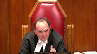
I’ll try and make this real quick.
Do I understand you to say that really the problem here is the inability of the government from the get-go to quantify the amount?
Because I don’t know how that works with your argument, and I’ll give you an example.
If the government could quantify right off the top and say we’re owed $500,000, do you agree that that $500,000 could not be used for priming charges, or do you say it still could be?
It still could be. Why?
Speaker 3 (01:49:09): still could be.

Because section 11 and the specific 11.2, 11.5.1 and 11.5.2 provide this court the discretion to do so.
And that all section 37 sub 2 does is preserve the source deductions but it doesn’t speak to priority.
All right.
Thank you very much.
Thank you.
Justice Wagner (01:49:28): Mr. Begeneck.
Speaker 4 (01:49:32): uh good morning or good afternoon thank you um I don’t intend to do a lengthy introduction I think I want to address two things first uh in relation to an earlier question of justice Moldaver and his latest question
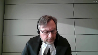
and then I’ll dive right into my submissions addressing the issue uh that I’ve raised and that is whether the uh priming charges fall within the definition of security interest under the income tax act you don’t have to
Justice Moldaver (01:50:01): necessarily pick on me.
He could pick on Justice Brown or Justice Roe if you don’t mind.
Speaker 4 (01:50:08): uh I’m sure they’ll have I’ll have that opportunity as well.
Um just factually in this case just for the benefit of the court at the time of the initial application the company estimated that they owed the crown approximately 1.1 million and the assumption going in was that that was all in the nature of some level of deemed trust whether source deductions or goods and services tax although we largely suspected based on information that was made available to us and put before the court that it was uh in the main deemed trust.
We did ultimately find out what the crown was owed but not until after the court of Queen’s bench decision was issued in this matter and it was somewhat less about six hundred and forty nine thousand dollars.
The point being this that this type of litigation has often been called real time.
I believe that was Justice Farley of the Ontario Superior Court who’s coined that phrase and the difficulty that’s often faced when parties are making application to the court for protection under the CCAA is that we do not work with a full panellope of information as much as we we might like to and in those circumstances it’s imperative that the court be given broad discretion as it is under the legislation and the vast body of jurisprudence that’s been built up to grant priming charges to secure among others the professionals and that’s the charge that’s nearest and dearest to my client in this instance to secure them for not their first invoices but their last in the event that something goes wrong.
So and oftentimes and that’s not through any fault on the part of the crown necessarily but the crown will not commit to a number until they’ve had an opportunity to step in and do an audit under the auspices of the insolvency filing.
Justice Rowe (01:52:09): I think it may come down to the material incentive versus the moral incentive.
If you’re in the private sector, you’ve got the material incentive.
If you’re in the public sector, it’s more of the moral incentive.
Speaker 4 (01:52:21): That’s a fair comment, Justice Roe, although as I will articulate the Crown is not a disinterested observer in these proceedings, they’re bound by the CCAA and everything that goes with it.
They, when they are a creditor, have similar obligations to any stakeholder or actor on the stage of the proceeding.
They have obligations of good faith, they have obligations to move with due diligence and exercise that.
So while they have a more broad-based moral imperative, which I agree with, the fact of the matter is in real-time litigation the expectation is that they too will move in a timely manner and offer up some assistance to the process where feasible and possible.
Now it’s that single proceeding model that I would submit Professor Wood bases in large measure his conclusions that these priming charges do not form or fall within the definition of security interest under section 2274.1 of the Income Tax Act.
The language is very broad, there’s no question about that.
However, as I’ve pointed out in my factum, courts at the Court of Appeal level in both Saskatchewan and British Columbia have made inroads in that breadth in the Schwab construction case and in what the case that we’ve euphemistically referred to as Megapets.
They’re found at tabs 11 and 12 of the condensed book.
Both courts took a more textual approach and noted and found determinative that the absence of a reference to an equipment or chattel lease or a conditional sales contract carried the day in terms of whether the Crown’s deemed trust had priority over those two interests.
Now my friend with the Crown, Mr. Taylor, purports to distinguish those two cases by noting that the interests involved not necessarily property interests of the debtor.
In contrast to that, I would suggest and submit that in certain cases, certainly in conditional sales contracts, the debtor is able to build up equity in the equipment, whatever is the subject of that conditional sales contract.
So by the time they get to the last payment, there is indeed equity there that forms part of the property of the debtor capable of being attached.
Similarly in certain types of leases, and there’s a great body of jurisprudence on this, financing leases, which we need not get into for the purposes of today, the debtor can equally build up equity in the equipment, which remains the subject matter of those leases and they can be attached by other creditors.
Although the Crown does not take a position in respect of those types of security interests in relation to the deemed trust.
Now Professor Wood in his article, which is at tab 10 of our condensed book, page 55, and this was referred to earlier by one of the justices of the court.
This is about midway down, probably fourth paragraph from the bottom in the middle of that paragraph, Professor Wood notes that the court ordered charges are unlike conventional consensual and non-consensual security interests in that they are integrally connected to insolvency proceedings that operate for the benefit of the creditors as a group.
He notes also that given the fundamentally different character of these court ordered charges, he would expect, or he says it would be reasonable to expect that they would be listed and enumerated within section 227, or pardon me, the definition of a secured creditor in 223, 1.3, 224, pardon me, of the Income Tax Act.
I would go further than Professor Wood and note that the charges that we have here are not just for the benefit of the creditors, they’re for the benefit of all of the stakeholders.
The Crown’s certainly a creditor.
The Crown’s also a stakeholder in the sense that seeing a struggling business survive has broad-based societal, to use your term, Justice Robe, probably more of a moral imperative benefit to see that business survive, see the employees continue to work so they’re not having to have recourse to the employment insurance benefits and so on and so forth.
So it’s much more broad-based and that’s the whole reason for the CCAA.
It largely speaks to creditors because creditors drive the process, but we know from the jurisprudence and from the literature that’s written on this very valuable piece of legislation that it has a much broader impact and imperative and thus we say, in our argument, that if there is a benefit here for all stakeholders, not just creditors, not just the monitor of the professionals, not just the interim lenders, but the broad-based ability of the court to grant these charges, then given their particularly unique nature, it follows that in the absence of their articulation in section 2274.1 or in rather the definition of security interest in the Income Tax Act, that that ought to be determinative of whether or not the deemed trust has priority to the priming charges.
Thank you.
Justice Brown (01:58:37): So what do we do then with the language that Parliament did use in the definition of security interest which includes a charge of any kind whatever, however, whenever arising?
Why does that not capture any kind of charge ever made, however made?
Speaker 4 (01:59:05): Let me take you back to the jurisprudence that
Overlapping speakers (01:59:08): was.
Justice Rowe (01:59:09): Thanks for watching!
Speaker 4 (01:59:09): first promulgated under the Act before these particular sections, and I’m referring to the CCAA, were brought into effect.
As was noted in the Century Services case, the initial language in Section 11-1, which gave rise to these charges, simply said at the end, make an order under this section.
It did not use the more expansive language of Section 11, which we have now, which says make any order it thinks fit.
And as we note in our factum, there was a vast body of jurisprudence that has been built up over the years under the original section of the CCAA that the court found gave them the jurisdiction to grant these charges.
Among that case law was the Temple City decision out of the Alberta Court, which allowed a priming charge ahead of the Crown’s deemed trust.
Now granted, it was on what we thought at the time was the precipice of these changes coming into place, but they were somewhat delayed.
This court has said that ousting the jurisdiction of a superior court requires explicit language.
That’s LAZOT.
I’ve referred to it at tab 15, page 84 of our condensed book, paragraphs 56 to 57.
There are strict requirements to abrogate from the common law rules.
And as I’ve noted, prior to these amendments, the jurisprudence that was built up under the CCAA, including Temple City, seemed to give the courts that jurisdiction to grant these priming charges.
And it was fully embraced, I would submit, by Parliament when they brought in the changes and gave the court the specific jurisdiction to do so without abrogating specifically the jurisdiction of the court to make those charges.
And the court notes this in the Century Services case, which is at tab 4 of my condensed book, page 28, paragraph 68, where Justice Deschamps says in this regard, though not strictly applicable to the case at bar, I note that Parliament has in recent amendments changed the wording contained in section 11.1, making explicit the discretionary authority of the court under the CCAA.
Thus, in section 11 of the CCAA is currently enacted, a court may, subject to the restrictions set out in this act, make any order that it considers appropriate in the circumstance.
Parliament appears to have endorsed the broad reading of the CCAA authority developed by the jurisprudence.
Justice Martin (02:02:16): May I interrupt there and question your reliance on century service for that proposition.

When it seems that peppered throughout that decision, the court is saying but the GST is not like source deductions and there’s many places that they say as much is that the crown retained priority for source deductions of income tax.
You know, under paragraph 29 and we could go through, so there’s many, many dicta there that would create a different category for source deductions.
So why does that case support your proposition?
Speaker 4 (02:03:00): The case supports the proposition because of two things.
First of all, under Section 37.1, the deemed trust for GST was eliminated.
It’s brought back in, or it’s not brought back in at all within the CCAA.
That’s what century services ultimately stands for.
My submission is that what’s happened here and what my friends in their submissions in their factum from the BDC note is that Parliament saw fit to bring and subject to the CCAA the deemed trust provisions.
That’s brought back in with 37.2.
But the deemed trust does not maintain its absolute character in a CCAA proceeding.
One of the key elements when there is a plan is that they don’t need to get paid immediately.
The plan only needs to provide that they get paid in full within six months unless they consent to another type of treatment.
But it doesn’t require that they be paid immediately on the plan being approved.
It follows that others could be paid.
There could be a pool of money created for smaller unsecured creditors that is paid immediately upon the approval order being granted and the appeal period expiring.
Justice Rowe (02:04:31): But priority is different from the sequence of payment.
You can have your priority preserved, but not be actually paid first, can you not?
Speaker 4 (02:04:44): Well that’s a fair comment Justice Roe, but if we follow through with the Crown’s argument and taken at its base, the Crown wants to be not only preserve its position, but have it paid first too.
They want it paid above the priming charges, they want it paid above all else.
Section 6-3 is inconsistent with that position.
Justice Rowe (02:05:19): But I mean, if you have an enterprise that can’t operate unless it has a piece of machinery, and the machinery is going to be repossessed the next day, and there’s an amount owing of $10,000 on the machinery, and what we’re talking about is millions and millions of dollars owed to everybody else, I mean, of course, these judges being practical people say, well, you know, $10,000 gets paid to prevent the machine from being carried away, and we’ll talk about the rest of it tomorrow.
I mean, that’s just, you know, judges have to be practical people, a for sure, as you well know in these CCA proceedings.
That’s different from who has priority, and whether that priority can be subordinated.
The priority of deemed trusts under the ITA can be subordinated by an order for priming charges.
Speaker 4 (02:06:22): I appreciate the comment and the question, Justice Strope, that there is a difference between payment and priority.
In the metaphor that you’ve utilized, though, it would depend on cash availability and how that is supposed to be paid.
So presumably, let’s take it one step further.
There’s a $10,000 deemed trust claim at the outset of a proceeding, but there’s no money in the bank.
And these priming charges need to be granted, but we want CRA out of the way.
How are we supposed to take care of that in the absence of having cash available to deal with it?
And that’s the whole purpose of having the priming charges available for interim lenders to access, for administrative professionals to access, in order to ensure that they’re covered in the event that they’re not.
Justice Rowe (02:07:21): It doesn’t come down to this, as well.

Is the monitor, is the lender of interim financing, and are these directors willing to serve, but they stand second in priority to the deemed trust?
You’re saying, oh, no, they’re not going to do it, the whole thing will just collapse.
But it turns into a practical question as to whether they’re willing to do it, as opposed to a statutory interpretation question, I think.
Speaker 4 (02:07:53): Well, you’re quite correct, Justice Rowe, the CCAA is a very practical, driven statute.
And in any given circumstance, as Mr. Oliver articulated today, first of all, it’s open to the court to not grant a priming charge over the CRA for the deemed trust, it’s open to the court to not grant a priming charge over any secured creditor in particular.
We’ve seen that happen in several cases.
In any given instance, it will be up to the professionals or the interim lender to make a decision on whether or not it is appropriate in any particular circumstance to dive into the proceeding, if you will, or participate in it.
So as a matter of practicality, the answer to the question is it depends on each circumstance.
In several of these, let’s use developer insolvencies as an example, we may have several different lenders advancing money on several different projects because it’s in their interest to deal with it on a particular basis, but they’re not broad based, they’re not granting the security over the entirety of the company.
So in any particular instance, yes, I agree that discussion can be had, but as a matter of what I’ll call comfort and frankly commercial certainty for the benefit of the interim lenders, the reliance on the discretion of the court to grant the orders in the appropriate case is a key element to making this system work.
Justice Wagner (02:09:44): Thank you.
One last question by Justice Moldaver.
Justice Moldaver (02:09:47): page 36 of your factum if I have this correct you say this whole thing could have been easily dealt with by Parliament had it added to 1152 sub 2 the words accept the claim of her majesty over deemed trust right if you got that part of your factum
Overlapping speakers (02:10:10): Yes.
Justice Moldaver (02:10:11): All right.

Why would it be necessary to do that unless the Crown is found to be a secured creditor under the definition of the CCAA?
Parliament has defined secured creditor under the CCAA.
I haven’t heard a word as to why, really, apart from the word charge, they come within that definition.
In fact, deemed trusts are not included in that definition.
So why would it be necessary for them to add these words if the Crown is not a secured creditor to begin with under the CCAA pursuant to Parliament’s definition of secured creditor under that act?
Speaker 4 (02:11:01): Okay.
First response to that question, Justice Moldaver, is that the monitor certainly supports the position of the majority of the Court of Appeal finding that the Crown deemed trust claim was a secured claim.
Secondly, if one looks at the definition of secured claim under the CCAA, as my friend Mr. Taylor took the Court to earlier in the submission, it includes a number of items, including not only charge as you referenced, but later in the section, or pardon me, earlier in the section, refers also to a transfer of property being made as security for the performance of an obligation.
That point was actually argued by us as monitor before the Court of Queen’s Bench, and just for reference for the Court, that is actually found in the transcript of the proceedings which the Crown has submitted in reply to the interveners fact.
The whole transcript is there.
That argument was articulated at page 38 of that transcript.
So we would, in answer to the question, security interest falls not only under the basis of the fact that it’s a charge, but if the Crown is truly taking the position that property is not notionally transferred or money is notionally transferred to the Crown from the corpus of money or property that is in the hands of the debtor, then that transfer as security for that obligation fits within the definition of secured creditor or security interest under the CCAA.
Justice Wagner (02:13:01): Thank you very much, Kelly Bourassa.
Speaker 5 (02:13:08): Good afternoon Justices.
Kelly Barassa for the Intervener at the Insolvency Institute of Canada.
I have three points that I’d like to make over and separate from the submissions that the appellants and respondents have made.
Firstly, the IIC is comprised of Canada’s leading insolvency and restructuring professionals consisting of the most experienced legal accounting and financial professionals in Canada.
The Crown in its materials argues that expert evidence is required to support the position set forth by the IIC and by CARP, the other intervener in this matter, but fails to recognize that that we are the experts in this field.
Secondly, in the Crown’s reply to the Intervener’s Factums, the Crown attaches a 2002 joint task force report of the IIC and CARP, but it does so without proper context.
And there are three sub points here Justices.
The report attaches proposals, not express recommendations as set forth by the Crown.
The timing of the report is very relevant.
This report was issued in March of 2002.
That was after this Court’s decision in Sparrow, yet before the decision was rendered by this Court in First Vancouver.
So in other words, it was at a time where this Court had said to Parliament, if you make clear in the fiscal statutes that you have an overriding proprietary interest, then we can deal with that.
The fiscal statutes were amended after Sparrow, and then that amendment was interpreted by this Court in First Vancouver, but we didn’t have the benefit of that decision when the proposals set forth by the IIC were put forth to Parliament in 2002.
All of that to say that we were at a time where it was believed that the deemed trusts were in priority to any and all claims and created a proprietary interest.
We didn’t have the benefit of First Vancouver where the deemed trust provisions were analogized to a floating charge.
And so in our proposals, we obviously don’t suggest that the priming charges take priority over the deemed trust for that reason.
And then finally, notwithstanding the report and the proposals that were contained therein, as my friends have have gone through in terms of parsing the words of the CCAA and the provisions that were brought in after the 2002 report in the 2009 amendments, there was no limit to the priority set forth.
The third point is that the Crown argues that the debtor should not be able to use source deductions to fund insolvency proceedings.
And this concept makes it appear as though there is some fund set aside or that when payroll is paid that a debtor company then says, well, these are the source deductions with respect to this payroll run.
If that were the case, the Crown wouldn’t need a deemed trust.
But in fact, how this practically works is companies and debtors in CCAA proceedings bring in revenues from their operations.
They use those revenues to pay the net payroll owing to their employees, and then later they remit, or in the case of CCAA debtors at times they haven’t remitted, the source deduction portion.
It’s not that there is a fund that we’re suggesting that debtors should be able to use that is otherwise earmarked for the Crown.
And so that’s the wrong way to look at this in our submission.
The only last point I would make in my brief time is to recognize as this court did in Indelex that lenders are driven by their commercial imperatives.
It is not a situation where debtor parties can go to interim financiers and say, you’re going to be behind some sort of a claim that cannot be quantified, but I’m sure you can lend money to us in any event.
Justice Wagner (02:18:15): Thank you very much.
Thank you Justices.
Thank you.
Speaker 6 (02:18:22): Thank you, Chief Justice, and good afternoon, Justices.
For the record, Vanda Mossler, Initials RS, from the Osler firm for the intervener of the Canadian Association of Insolvency and Restructuring Professionals, which is known simply as CARP.
And as the name suggests, the organization is formed up of 1,500, roughly, members of professionals who practice in the area of insolvency and restructuring across the country.
CARP submits that the Crown’s position on this appeal would undermine the effectiveness of priority charges which are central to the CCAA system, and which, in turn, would reduce the availability of CCAA restructurings to deserving companies.
In the short time I have, I’ll make two points.
First, why the Crown’s position on this appeal runs contrary to the policy objectives of the CCAA, and secondly, how the Crown’s position also undermines the very purposes of the deemed trust itself.
On the first point, I want to direct the Court’s attention to tab one of CARP’s condensed book, where there is an article by Professor Sarah, who makes the point that a properly functioning insolvency regime includes a balancing of mechanisms.
And then that’s an important component of a properly functioning insolvency system.
And in CARP submission, allowing this appeal will undermine this balance of mechanisms by limiting the effectiveness of the CCAA and by causing a chill on complex restructurings.
The practical reality that we’re facing here and the Court is facing here is that at the time of the initial filing, when monitors are appointed by the Court and when interim lenders are asked to advance funds, the value of the debtor’s assets are typically unknown, and the quantum of the debtor’s outstanding source deductions may often be also unknown.
As counsel to the monitor pointed out, in fact, that was precisely the situation in this case.
And if the Crown’s position on this appeal is correct, there will be increased uncertainty with respect to the value of any charges for court officers and interim lenders.
And that uncertainty will lead in turn to an erosion in the protections which are available to court officers and interim lenders and hence increase the difficulty that some insolvent companies will have in seeking protection under the CCAA or under the BIA.
And it is precisely that reality which led to what the Chambers judge and the Court of Appeal in this case referred to in their decisions as the Crown’s position creating a chill on restructurings.
In our submission, there can be no doubt that introducing uncertainty about these matters into the restructuring process will unquestionably result in that chill on restructurings in this company.
The Court of Appeal in this case succinctly commented on that reality at paragraphs 50 and 51 of their decision, of the majority’s decision, which is reproduced at tab three of our condensed book in comments with which Kerop wholeheartedly agrees.
Can I ask you if the lack of consistency in the
Justice Abella (02:21:47): Sorry, sir, I just want to stop you when you talked about the chill.
Does that come down to an argument that provisions in the CCAA that give the crown priority for deemed trust is what creates the chill?
Speaker 6 (02:22:07): I’m sorry, yes, the Crown’s position, if the Crown has priority over the, if the deemed trust takes priority over the interim lending charge, that would create a disincentive for interim lenders to provide interim lending, which is the lifeblood of complex restructuring.
Overlapping speakers (02:22:26): And therefore we read out those provisions?
I’m not suggesting that, Madam Justice.
Yes, that’s exactly what I’m asking.
So what is it that you suggest we do with those provisions?
Speaker 6 (02:22:36): What I’m suggesting, Madam Justice, and I’m not going to get into the interpretive, the statutory interpretive matters that have been handled ably by colleagues on this appeal, what I’m, my point is that the policy objectives and these realities are things that this court ought to bear in mind when as part of the interpretive exercise.
Obviously the plain language of the statute must govern and if this court concludes that the plain language is clear, then that must govern.
But my submission, Kerp’s submission, is that these sort of policy concerns or the implications of decisions are things that can be weighed in the balance in the interpretive exercise.
Thank you very much.
Justice Wagner (02:23:22): thank you.
Your time is up, but if you want to conclude, we don’t hear you.
All right, Mr. Taylor, any reply?
Speaker 1 (02:23:45): I apologize for that.
I was muted.
Thank you Chief Justice.
I have really four points to make in reply and they will be quick.
The first is this case presents the court with a great example of what this court spoke to in the Placer Dome decision and you can find that in the Crown’s Condensed Book at tab three.
In paragraph 23 Justice Labelle was writing and said very clearly where a provision admits of no ambiguity in its meaning or in its application it must simply be applied.
Reference to the purpose of the provision cannot be used to create an unexpressed exception.
And then on the next page he wrote legislative purpose may not be used to supplant clear statutory language and with respect that is exactly what the majority of the Court of Appeal did and it is what the respondents and the interveners urged this court to do today.
I’d like to take the court to the Century Services decision tab eight.
And I apologize I forget which which of member of the court asked the question but the question was put to my my friends at Century Services is replete with references to how Parliament accorded special treatment to the source deduction deemed trust.
That’s absolutely correct and we’ve given you two excerpts in our condensed book where the court in two different judgments stressed how Parliament has said the income tax source deduction deemed trust is unique and special and that can’t be ignored.
And I just like to point the court especially to paragraph 104 of the decision of Mr. Justice Fish.
This is in the condensed book page 21 and Justice Fish says the survival of the deemed trust under these provisions is confirmed in the CCAA and in the BIA.
In all three cases Parliament’s intent to enforce the Crown’s deemed trust through insolvency proceedings is expressed in clear and unmistakable terms.
And with respect the deemed trust the essential central feature of the deemed trust is the absolute priority.
And the majority of the Court of Appeal and the respondents effectively would eviscerate that by saying well the Crown still receive record some priority
but it can be it can be adjusted in a discretionary way.
That is plainly inconsistent with Parliament’s obvious intent in enacting 227 4.1 with the language that Parliament chose notwithstanding any other enactment.
Clearly Parliament did not want the deemed trust to be subject to any discretion.
Why did Parliament do that?
This Court has recognized that in prior decisions because the Crown as the involuntary creditor that depends on the employer to report what it pays and what it has withheld the Crown will systematically lose out without special protection.
And Parliament has given that protection and this Court should give that protection effect.
I just want to say as well the respondents have stressed the important public policy objectives of the CCAA.
Well don’t forget the Income Tax Act is also an important public piece of public legislation that serves a very important purpose.
It secures and ensures the collection of the federal government’s revenue base which goes to pay for all of the public programs, public services, national defense, you name it.
Clearly Parliament sees that as a very important policy objective.
Justice Abella (02:27:22): But this court said in century services that all of that notwithstanding, you have to look at the exercise of discretion with a clear view of what the purposes of the CCAA are and I’m not sure your argument really takes away from what they said there.
Speaker 1 (02:27:40): Well I’m not suggesting the court should not consider the important policy objectives of the CCAA.
Just don’t throw the baby out with the bathwater and forget that parliament has very important objectives in this deemed trust as well and they are expressed in clear language.
Excuse me what do you say what do you
Justice Moldaver (02:27:58): What do you say about your friend’s argument that Parliament, they don’t know how much is owed at the time when you’re into a restructuring and time can be fatal because if interim financing is needed, monitors, et cetera, you know, Parliament, if Parliament can’t come up with a figure, what’s supposed to be done?
Speaker 1 (02:28:22): I’m just coming to that, Justice.
This issue of uncertainty and what is going to happen.
And there are two answers to that.
One, the degree of uncertainty is not driven by the Dean Trust and the source deductions.
The employer knows the source deductions.
They note those every time they issue a paycheck to their employee.
And when an employer applies under the CCAA, the debtor is required to provide their current financials and their last audited financials.
And with respect, it should not be that difficult for diligent lenders and diligent practitioners to identify the deemed trust amount.
The uncertainty relates to employer contributions to EI and CPP penalties and interest.
Those amounts are unknown.
But under 6-3, those amounts are going to have to be paid anyways.
The lenders and the practitioners already know that.
They already live under 6-3.
They already live with the uncertainty that there will be some amount that’s not yet known that will have to be paid under 6-3 if a plan succeeds.
All right.
But the amount of the deemed trust itself is the discrete amount.
And with respect, it does not create that level of uncertainty.
CHAIRMAN BERNANKE.
Thank you very much.
Justice Wagner (02:29:39): I’d like to thank Council for their submissions.
The court will take the case under advisement.
Thank you.